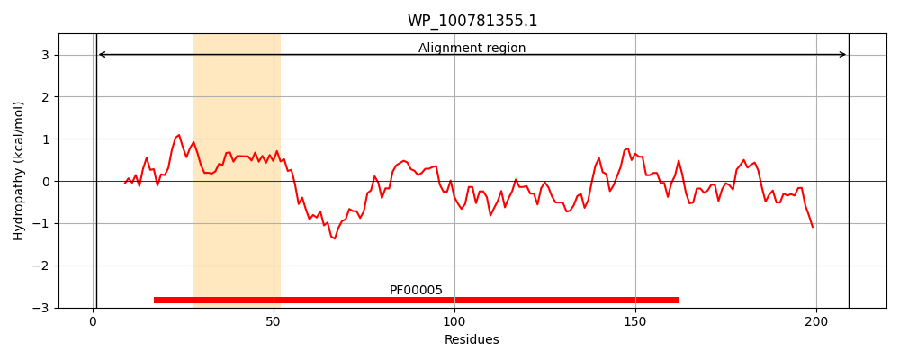
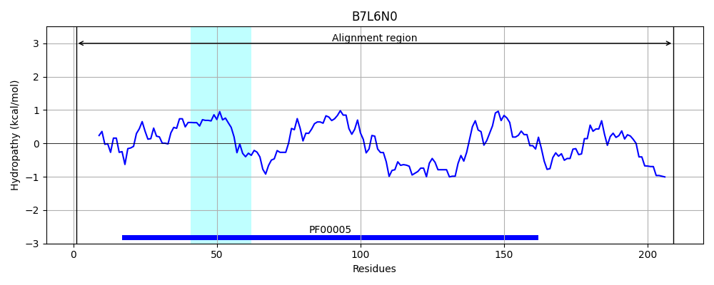
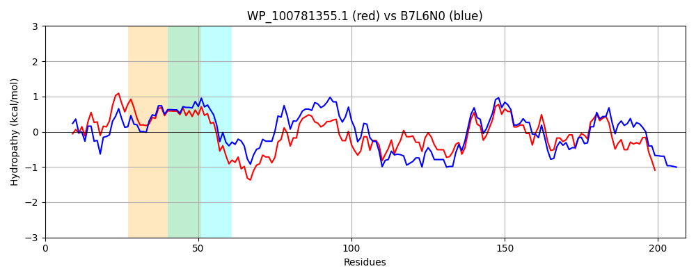

Hit Accession: B7L6N0
Hit TCID: 3.A.1.19.4
Hit Description: gnl|BL_ORD_ID|2025 gnl|TC-DB|B7L6N0|3.A.1.19.4 Putative sulfate/thiosulfate transporter subunit: ATP-binding component of ABC superfamily transporter OS=Escherichia coli (strain 55989 / EAEC) GN=ynjD PE=3 SV=1
Mach Len: 209
e:0.000000
Query TMS Count : 1
Hit TMS Count: 1
TMS-Overlap Score: 0.600000
Predicted Substrates:CHEBI:9335;sulfate, CHEBI:9569;thiosulfate(2-)
BLAST Alignment:
Score: 650 , Bit scores: 254 bits, E-value: 8.3e-87, Alignment length: 209, Percentage identity: 63
Query: 1 MLTVNHLTLSVKRQPLLREVAFSVAPGEVLTLMGPSGSGKSTLFAWMIGALAGDFRAEGELWLNGRRCDTLPTEHRRIGILFQDPLLFDHFSVGQNLQLALPESVRGEARKAAVEQALSRAGLHGFAPRDPATLSGGQRARVSLLRALLARPKALLLDEPFSRLDATLRAAFRRWVFEELARQAIPAILVTHDREDGPPAGRCLAMETW 209
ML V +++L + LL V F+V G+++TLMGPSG GKSTLF+WMIGALAG F GELWLN +R D LPT R+IGILFQD LLFD FSVGQNL LALP +++G AR+ AV+ AL RAGL +DPATLSGGQRARV+LLRALLA+PKALLLDEPFSRLD LR FR+WVF E+ AIP + VTHD +D P L ME W
Sbjct: 1 MLCVKNVSLRLPESRLLTNVNFTVDKGDIVTLMGPSGCGKSTLFSWMIGALAGQFSCTGELWLNEQRIDMLPTAQRQIGILFQDALLFDQFSVGQNLLLALPSTLKGTARRNAVKDALDRAGLAETYHQDPATLSGGQRARVALLRALLAQPKALLLDEPFSRLDVALRDNFRQWVFSEVRELAIPVVQVTHDLQDVPADSSVLDMEQW 209 | Protein Hydropathy Plots: |
|---|
|  |  |
Pairwise Alignment-Hydropathy Plot:
|
|---|
|  |